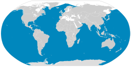

De zeeën
De blauwe vinvis leeft in heel veel zeeën. Eigenlijk komen ze in bijna alle volle zeeën voor. Dat zijn zeeën die niet bij landen of staten horen. Een van de open zeeën waar ze niet komen is de Noordelijke IJszee. Ook komen ze niet voor in zeeën tussen land in, zoals te zien is op de kaart op de foto. Blauwe vinvissen leven dus vooral in zeeën die niet dicht bij land liggen, zoals de middellandse zee. Die zeeën zijn vaak ook minder diep dan volle zeeën. Toch blijft de blauwe vinvis meer aan de oppervlakte, omdat het krill daar ook zwemt. Ook komt de blauwe vinvis nauwlijks voor in de Noordzee. We vinden hier alleen verdwaalde en/of gestrandde blauwe vinvissen. De blauwe vinvissen blijven niet de hele tijd in dezelfde zeeën. In de zomer blijven ze in de koude zeeën. Als het langzaam winter wordt gaan ze naar de subtropische zeeën rond de evenaar. Veel blauwe vinvissen doen dat, maar er zijn soorten die niet verplaatsen naar een andere zee.
Hoe snel en hoe diep?
Ook al is het een heel groot dier, hij zwemt nog steeds best snel. Als hij op normale snelheid zwemt gaat hij ongeveer 22 km/h. Dat is sneller dan een gemiddelde fietser. Dus te bedenken dat een 100-170 ton wegende vinvis sneller gaat dan wij mensen op een fiets. Maar ze kunnen op topsnelheid ook 50 tot 60 km/h halen. De blauwe vinvis is als je kijkt naar hoe diep hij zwemt geen winnaar. Als hij zoekt voor eten gaat hij ongeveer 100 meter diep. Maar toen er vroeger door mensen op de blauwe vinvis gejaagd werd kwamen we er achter dat hij ook tot 500 meter diep kon duiken. Vaak als ze onderwater gaan voor voedsel blijven ze rond de 10 tot 20 minuten onderwater. De blauwe vinvis kan tot 30 minuten zijn adem inhouden. Dat is handig voor tijdens het duiken. Maar als hij aan het reizen is zwemt hij aan het oppervlak ademt hij in ieder geval elke minuut.
Ga terug